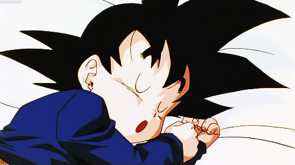

Características en Jóvenes:
Necesidad de 8 a 10 horas diarias:
Los adolescentes requieren más horas de sueño que los adultos para un óptimo desarrollo.Ciclo circadiano alterado:
Durante la adolescencia, el reloj biológico cambia, provocando que los jóvenes tiendan a dormir más tarde y despertar más tarde.Impacto en el aprendizaje y la memoria:
Un buen descanso mejora la concentración y facilita la retención de información, mientras que la falta de sueño puede reducir el rendimiento escolar.Regulación emocional:
Dormir lo suficiente ayuda a manejar mejor el estrés, la ansiedad y la irritabilidad, mientras que la privación de sueño aumenta el riesgo de depresión y cambios de humor.Efectos en la salud física:
Un sueño inadecuado puede debilitar el sistema inmunológico, aumentar el riesgo de obesidad y afectar el metabolismo.